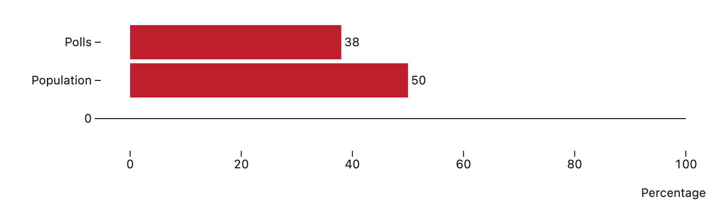

Does your vote count?
Exploring the Ways in Which New Legislation Threatens to Undermine the Integrity of American Democracy
Exploring the Ways in Which New Legislation Threatens to Undermine the Integrity of American Democracy
January 6th, 2021
On January 6, 2021 a mob of supporters of President Donald Trump stormed the United States Capitol and disrupted session of Congress that was then convening to certify the results of the 2020 election and confirm the election of Joe Biden. This attack was labeled as both a coup and an act of domestic terrorism. While frightening in and of itself, the January 6th attack on the Capitol also has set the stage for an unprecedented attack on voting rights--an attack that is currently playing out before our eyes, and has the potential to undermine the integrity of American democracy. Due to the Covid-19 pandemic, governors and election officials in a variety of states instituted changes to make it safer to vote, including making it easier to vote by mail and extending early-voting periods. Since Democratic voters were more likely than Republican voters to vote by mail, Trump began a narrative that these voting policies had resulted in a rigged election. This narrative caused many throughout the country to believe that the election was stolen, and that they needed to “stop the steal” through violence if necessary.

How do voting rights bills impact voters?
Looking specifically to Georgia, in 2020, we already saw divides in voting along racial lines.
Looking specifically to Georgia, in 2020, we already saw divides in voting along racial lines.
During the 2020 election, Metro Atlanta contained 50% of voters, but possessed only 30% of polling locations.